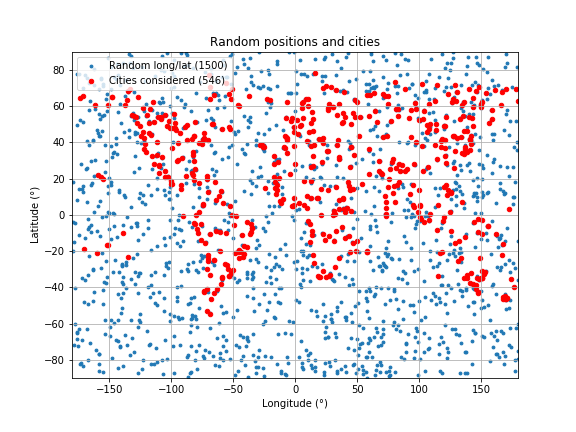

Cities data-set
The weather data was pulled through 3 steps:
- We created 1500 combinations of latitudes and longitudes using Numpy random functions.
- We reduced this list to 612 existing cities, using the citipy library to find the closest cities for a given set of coordinates.
- We pulled weather information from 546 of these cities using the OpenWeather API.
- 395 cities in the North hemisphere (72.34%)
- 151 cities in the South hemisphere (27.66%)
